정보통신산업기사 (2003-03-16 기출문제)
1과목: 디지털전자회로
1. 아래에 열거한 항목 중에서 트랜지스터 CE(공통 이미터)증폭기의 입력전압, 입력전류, 출력전압, 출력전류를 올바르게 표시한 항은?
- ① 입력전압 : VBC, ② 입력전류 : IB, ③ 출력전압 : VEC, ④ 출력전류 : IE
- ① 입력전압 : VEB, ② 입력전류 : IE, ③ 출력전압 : VCB, ④ 출력전류 : IC
- ① 입력전압 : VEB, ② 입력전류 : IB, ③ 출력전압 : VEC, ④ 출력전류 : IC
- ① 입력전압 : VBE, ② 입력전류 : IB, ③ 출력전압 : VCE, ④ 출력전류 : IC
(정답률: 알수없음)

2. 그레이코드 101101을 2진수로 변환하면?
- 110110
- 111011
- 011011
- 111101
(정답률: 알수없음)
3. 브리지 정류회로에서 교류 220[V]를 정류시킬 때 최대전압은 약 몇 [V] 인가?
- 140
- 311
- 432
- 180
(정답률: 알수없음)
4. 그림의 증폭 회로에서 S를 단락 시켰을 경우에도 그 값의 변화가 거의 없는 것은 어느 것인가? (단, Re+R1 =
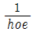
)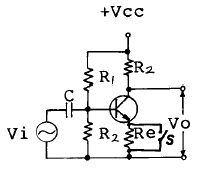
- 증폭기의 입력 저항
- 증폭기의 안정도
- 증폭기의 전류 이득
- 증폭기의 전압 이득
(정답률: 알수없음)
5. 그림과 같은 연산증폭기의 출력 전압 Vo는?
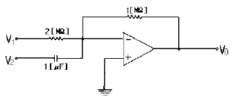
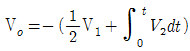
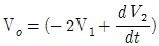
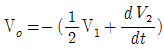
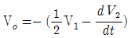
(정답률: 알수없음)
6. FM 검파회로로서 사용되지 않는 회로는?
- PLL 검파
- Ratio 검파
- Foster-seeley형 검파
- Collector 검파
(정답률: 알수없음)
7. 여러 개의 입력 신호 가운데 하나를 선택하여 출력하는 동작을 하는 것은?
- 인코더
- 멀티플렉서
- 디멀티플렉서
- 페리티 체크회로
(정답률: 알수없음)
8. 쌍안정 멀티바이브레이터의 결합저항에 병렬로 부가한 콘덴서의 사용 목적은?
- 증폭도를 높인다.
- 스위칭 속도를 높인다.
- 베이스 전위를 일정하게 유지시킨다.
- 에미터 전위를 일정하게 유지시킨다.
(정답률: 알수없음)
9. 그림의 논리회로는 어떤 논리작용을 하는가?
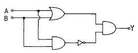
- AND
- OR
- NAND
- Exclusive OR
(정답률: 알수없음)
10. J-K 플립-플롭은 두개의 입력 데이터에 의하여 출력에서 몇개의 조합을 얻을수 있는가?
- 2
- 4
- 8
- ∞
(정답률: 알수없음)
11. 논리식
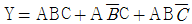
를 가장 간단히 한 것은?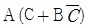
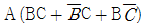
- A(B+C)
- ABC
(정답률: 알수없음)
12. 그림과 같이 증폭기를 3단 접속하여 첫단의 증폭기 A1에 입력전압으로 2[㎶]인 전압을 가했을때 종단증폭기 A3의 출력전압은 몇[V]가 되는가? (단, A1, A2, A3의 전압이득 G1, G2, G3는 각각 60[㏈], 20[㏈], 40[㏈]이다.)
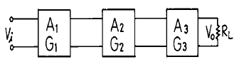
- 20[V]
- 2[V]
- 0.2[V]
- 20[㎷]
(정답률: 알수없음)
13. 그림과 같은 발진회로의 적합한 발진조건과 회로명은?
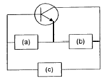
- (a) 유도성, (b) 용량성, (c) 용량성, 회로명 : 콜피츠 발진회로
- (a) 용량성, (b) 유도성, (c) 용량성, 회로명 : 콜피츠 발진회로
- (a) 유도성, (b) 용량성, (c) 유도성, 회로명 : 하틀리 발진회로
- (a) 유도성, (b) 유도성, (c) 용량성, 회로명 : 하틀리 발진회로
(정답률: 알수없음)
14. 증폭이득이 60[dB]인 증폭기에서 20[%]의 찌그러짐이 발생했다. 이것을 2[%] 이내로 개선하기 위해서 걸어야 할 부궤환은?
- 10[dB]
- 20[dB]
- 30[dB]
- 40[dB]
(정답률: 알수없음)
15. 베이스 변조회로에 대한 설명으로 틀리는 것은?
- 변조에 필요한 전력이 적다.
- 출력에 불필요한 고조파가 생겨 효율이 저하한다.
- 변조회로의 트랜지스터를 C급으로 바이어스 한다.
- 저출력의 변조도가 작은 경우에 사용한다.
(정답률: 알수없음)
16. 접합 트랜지스터의 스읫칭 속도를 빠르게 하기 위한 방법으로 적당한 것은?
- 베이스 회로에 직열로 저항을 접속한다.
- 베이스 회로에 인덕턴스를 접속한다.
- 베이스 회로에 저항과 콘덴서를 병열 접속하여 연결한다.
- 베이스 회로에 제너 다이오드를 접속한다.
(정답률: 알수없음)
17. 다음 부울식을 간소화 할 때 맞는 것은?
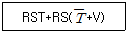
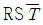
- RSV
- RST
- RS
(정답률: 알수없음)
18. 반가산기(Half-adder)의 구성 요소로 맞는 것은?
- JK 플립플롭
- 두개의 AND 게이트
- EOR과 AND 게이트
- 1개의 반동시 회로와 OR 게이트
(정답률: 알수없음)
19. 트랜지스터의 베이스접지 전류증폭률을 α 라 하면 이미터 접지의 전류증폭률 β 는 어떻게 표시되는가?
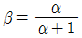
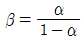
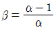
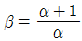
(정답률: 알수없음)
20. DC 결합과 AC 결합이 함께 사용되는 회로는?
- 비안정 멀티바이브레이터
- 단안정 멀티바이브레이터
- 쌍안정 멀티바이브레이터
- 블로킹 발진기
(정답률: 알수없음)
2과목: 정보통신기기
21. 전자교환 시스템의 통화로 단말회로의 공통된 기능이 아닌 것은?
- 발신호 검출
- 통화전류 공급
- 통화로 유지
- 통화로계 운용모드 관리
(정답률: 알수없음)
22. OA(사무자동화) 기기로서 거리가 먼 것은?
- 워드프로세서
- 복사기
- 모뎀
- 컴퓨터
(정답률: 알수없음)
23. 문자다중방송(teletext)의 주된 장비에 해당되는 것은?
- 문자다중신호중첩기, TV 송신기
- 문자방송편집장치, 송출장치
- TV 연주장치, 문자다중 신호기
- 문자다중신호기, 송출장치
(정답률: 알수없음)
24. 데이터 전송방식의 발전을 단계별로 열거한 것은?
- 음성급전용회선 → 광대역아날로그전용회선 → 디지털전용회선 → 종합통신망(ISDN)
- 고속도아날로그전용회선 → 디지털전용회선 → 음성급전용회선 → 종합통신망(ISDN)
- 데이터전용교환망 → 음성급교환회선 → 종합통신망(ISDN)
- 데이터전용교환망 → 음성급전용회선 → 디지털전용회선 → 종합통신망(ISDN)
(정답률: 알수없음)
25. 비트의 전송속도가 느리며 시스템의 효율이 낮으나 스팩트럼이 매우 협대역이고 잡음에 강한 모뎀의 전송방식은?
- ASK(진폭편이변조)
- FSK(주파수편이변조)
- APK(진폭위상변조)
- PSK(위상변조)
(정답률: 알수없음)
26. CCTV의 기본적인 구성장치가 아닌 것은?
- 촬상장치
- 전송장치
- 중계장치
- 표시장치
(정답률: 알수없음)
27. 다음 중 비데오텍스의 종류가 아닌 것은?
- Prestel
- Telidon
- CAPAIN
- Teletell
(정답률: 알수없음)
28. 셀룰러 이동통신 방식의 설명으로 틀린 것은?
- 이동전화 교환국과 기지국 및 이동 단말기로 구성된다.
- 통화단절을 해결하기 위해 이동국의 위치를 확인하여 자동전환(hand off)해준다.
- 주파수 재사용 효율이 낮으므로 많은 사용자를 수용할 수 없다.
- 이동전화 가입시 가입자 정보를 최초로 등록한 교환국을 홈교환국(Home Switch office)이라한다.
(정답률: 알수없음)
29. CATV의 구성요소중 수신안테나에서 수신한 각 채널의 방송신호를 중간 주파수대로 변환한 후 VHF대로 재변환하여 중계 전송망으로 송출하는 역할을 하는 것은?
- 헤드 앤드
- 중계전송망
- 원격조정기
- 가입자설비
(정답률: 알수없음)
30. MHS(Message Handling System)의 기능 구조가 아닌 것은?
- 메시지 전송기능(MTA)
- 사용자 대응기능(UA)
- 메시지 처리기능(MH)
- 물리적 메시지 배달기능(PDS)
(정답률: 알수없음)
31. 다음 중 팩시밀리 장치의 수신 기록 방식이 아닌 것은?
- 전해기록 방식
- 유도기록 방식
- 감열기록 방식
- 사진기록 방식
(정답률: 알수없음)
32. 통신위성에 이용되는 안테나의 종류가 아닌 것은?
- 롬빅 안테나
- 파라볼라 안테나
- 혼 안테나
- 헬리컬 안테나
(정답률: 알수없음)
33. 다음 중 OA 기기인 PBX는 어느 업무와 관련이 있는가?
- 문서 도형의 작성
- 데이터의 처리
- 통신 및 전송
- 정보의 보존 및 검색
(정답률: 알수없음)
34. 다음 중 DCE에 대해서 잘못 설명한 것은?
- 신호변환장치이다.
- 아날로그 전송로에는 모뎀(modem)을 사용한다.
- 디지털 전송로에는 댁내회선종단장치(DSU)를 사용한다.
- 데이터 단말장치이다.
(정답률: 알수없음)
35. 다음 디스플레이 중 수광형인 것은?
- CRT
- LED
- 액정
- 형광 표시관
(정답률: 알수없음)
36. 무선데이터통신의 장점으로 볼수 없는 것은?
- 문자, 숫자 등 데이터전송이 가능하고 각종정보의 검색 및 지시사항을 신속, 정확히 전달할 수 있다.
- 수신된메시지의 저장과 전송내용의 확인이 가능하다.
- 무선모뎀등 주변기기가 저가이다.
- 전파의 효율적사용으로 고신뢰성을 갖을 수 있다.
(정답률: 알수없음)
37. 핸드오프가 가능한 시스템은?
- 셀룰러 시스템
- TRS 시스템
- 무전기
- CT-1
(정답률: 알수없음)
38. 다중화기기는 하드웨어구성과 운용소프트웨어에 따라 여러가지 기능을 수행할 수 있다. 이 기능과 관계가 없는 것은?
- 공동이용기
- 순수한 경쟁선택
- 메세지스위칭
- 원격네트워크 프로세싱
(정답률: 알수없음)
39. 다음 중 변복조기 공동 이용기에 대한 설명이 아닌 것은?
- 하나의 변복조기를 몇개의 터미널이 공동 이용한다.
- 한쌍의 변복조기와 하나의 선로에 여러대의 터미널을 운영할 수 있다.
- 하나의 컴퓨터 포트만을 사용한다.
- 내부에 타이밍 소스를 갖고 있다.
(정답률: 알수없음)
40. 정보통신 단말기 구성에 있어서 보안(security)대책이 아닌 것은?
- 운용관리상의 대책
- 액세스 콘트롤
- 공개키 암호계방식은 보호책이 아니다.
- 축적 데이터 보호
(정답률: 알수없음)
3과목: 정보전송개론
41. 단일모드(single mode)의 광섬유 특징이 아닌 것은?
- 단거리 전송에 적합하다.
- 코어(core)의 지름이 작다.
- 고속 전송용이다.
- 빛의 산란이 적다.
(정답률: 알수없음)
42. 다음 전송 신호 방식중 전송로에서 발생하는 저주파 차단 영향을 받지 않는 방식은?
- 복류 NRZ
- 단류 RZ
- 복류 RZ
- 바이폴라(Bipolar)
(정답률: 알수없음)
43. 우수 패리티를 가진 해밍 코우드에서 착오는 몇번 행에 있는가?
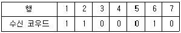
- 3
- 5
- 6
- 7
(정답률: 알수없음)
44. 전송선로에서 감쇠왜곡의 주된 원인은?
- 진폭에 대한 감쇠 불균형
- 주파수에 대한 감쇠 불균형
- 주파수에 대한 속도의 불균형
- 진폭에 대한 속도의 불균형
(정답률: 알수없음)
45. PCM방식에서 8비트로 구성된 펄스계열의 주기가 125[㎲]일 때 펄스의 전송속도는 몇[kbps]인가?
- 8
- 10
- 32
- 64
(정답률: 알수없음)
46. 반송파로 사용하는 정현파의 신호가 V(t) = A(t) sin(ωt + ø(t))일 경우, A(t)를 변화시킴으로써 정보를 싣는 변조방식은?
- AM
- FM
- PM
- PCM
(정답률: 알수없음)
47. 지구 적도 상공 약 35,800 Km의 높이에 궤도 경사각 0도, 초속 3 Km의 속도로 지구를 도는 위성의 궤도는?
- 정지궤도
- 동기궤도
- 회기궤도
- 준회기궤도
(정답률: 알수없음)
48. 다음 중 에러를 정정할 수 있는 부호방식은?
- BCH부호
- 수평 패리티
- Gray부호
- 수직 패리티
(정답률: 알수없음)
49. 다음 중에서 디지털 전송방법은?
- PAM
- PCM
- PPM
- PWM
(정답률: 알수없음)
50. 스트로브(strobe)신호와 비지(busy)신호를 이용하여 전송하는 형태는?
- 병렬 전송
- 직렬 전송
- 동기식 전송
- 비동기식 전송
(정답률: 알수없음)
51. 디지털 수신시스템의 순서를 바르게 나타낸 것은?
- 원천복호화 → 채널복호화 → 캐리어 복조
- 원천복호화 → 캐리어 복조 → 채널복호화
- 캐리어 복조 → 원천복호화 → 채널복호화
- 캐리어 복조 → 채널복호화 → 원천복호화
(정답률: 알수없음)
52. 직경 0.4mm인 케이블로 측정 주파수 2[㎑]인 가입자선로의 손실이 8[dB]로 설계하고자 한다. 이때 케이블의 적정한 거리는? (단, 0.4mm 케이블의 감쇄 손실은 1.9[dB/Km]이다.)
- 2.6
- 3.7
- 4.2
- 5.0
(정답률: 알수없음)
53. 다음 중 송신선로의 레벨을 넓게 잡음 신호처럼 확산시키는 다중통신방식은?
- 부호분할다중방식
- 시분할다중방식
- 공간분할다중방식
- 주파수분할다중방식
(정답률: 알수없음)
54. HDLC전송제어절차에서 사용되는 모드 설정 명령어가 아닌 것은?
- SREJ(selective reject mode)
- SARM(set async. response mode)
- SNRM(set normal response mode)
- SABM(set async. balanced mode)
(정답률: 알수없음)
55. 표본화(sampling)와 관계가 깊은 항은?
- Faraday
- Coulomb
- Shannon
- Maxwell
(정답률: 알수없음)
56. 다음 그림과 같이 변조하는 방식은?
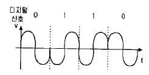
- ASK
- FSK
- PSK
- QASK
(정답률: 알수없음)
57. BPS(Bits Per Second)의 설명으로 틀린 것은?
- 정보의 유통 단위이다.
- 마아크와 스페이스와 같이 서로 상반되는 부호의 정보량은 1 bit 이다.
- 5단위 부호의 정보량은 log2 25 = 5bits 이다.
- 4진 신호레벨에서는 baud와 동일하다.
(정답률: 알수없음)
58. 광파이버(유리)의 굴절률이 전파하는 광의 파장에 따라 변화함으로써 생기는 분산을 무엇이라고 하는가?
- 모드분산
- 재료분산
- 구조분산
- 도파로분산
(정답률: 알수없음)
59. OSI-7 프로토콜중 네트웍층이 하는 역할을 바르게 나타낸 것은?
- 회선의 제어규칙
- 회선의 전기규칙
- 오류의 감지와 제어
- 데이터의 전송과 교환
(정답률: 알수없음)
60. 전송 제어문자 중 전송을 종료하고 데이터 링크를 초기화 시키는 문자는?
- SOH
- EOT
- DLE
- STX
(정답률: 알수없음)
4과목: 전자계산기일반 및 정보설비기준
61. Turn-around time이 가장 빠른 system은?
- 시분할 방식(time sharing system)
- 온라인 방식(on-line system)
- 실시간 방식(real-time system)
- 일괄처리 방식
(정답률: 알수없음)
62. 다음 중 틀린 것은?
- 통신위원회는 심의 재정기관이다.
- 통신위원회의 위원장은 정보통신부장관이 된다.
- 통신위원회의 위원장 및 위원은 대통령이 임명한다.
- 통신위원회의 위원의 자격 제한이 상당히 따른다.
(정답률: 알수없음)
63. 전산망 기기 상호간을 연결할 때 건설,운용 및 유지보수의 책임한계를 구분하기 위한 접속점을 무엇이라 하는가?
- 평형도
- 절분기
- 번호계획
- 분계점
(정답률: 알수없음)
64. 정보통신공사의 종류에서 정보설비공사에 해당되지 않는 것은?
- 정보망 설비 공사
- 전력설비공사
- 정보 전송 매체설비 공사
- 항공·항만 통신설비 공사
(정답률: 알수없음)
65. 마이크로프로세서에서 연산처리 한 후 연산 결과의 상태를 표시하는 레지스터는?
- 범용 레지스터
- 플레그 레지스터
- 콘트롤 레지스터
- 인덱스 레지스터
(정답률: 알수없음)
66. CAM (Content Addressable Memory)에 대한 설명으로 옳은 것은?
- CAM의 기억소자들의 내용은 파괴적으로 읽을 수 있어야 효율적이다.
- CAM은 직렬판독회로가 있어야 하므로 하드웨어 비용이 저렴하다.
- CAM은 주소를 사용하지 않고 기억된 정보의 일부분을 이용하여 자료를 신속히 찾는다.
- CAM은 주소를 사용해서 기억된 정보를 신속히 읽어낸다.
(정답률: 알수없음)
67. 전기통신의 표준화에 관한 업무를 효율적으로 추진하기 위해 설립한 것은?
- 형식승인심의회
- 한국정보통신기술협회
- 한국표준화센타
- 통신기술진흥협의회
(정답률: 알수없음)
68. 10진법으로 한 자리수를 나타내려면 2진법으로 최소한 몇 개의 비트가 필요하겠는가?
- 2
- 4
- 8
- 10
(정답률: 알수없음)
69. 전기통신설비의 기술기준에 관한 규칙에서 정의하는 음성주파수대역은?
- 200[Hz] 이상 2200[Hz] 이하
- 300[Hz] 이상 3000[Hz] 이하
- 300[Hz] 이상 3400[Hz] 이하
- 3400[Hz] 이상
(정답률: 알수없음)
70. 데이지 휠(daisy wheel)을 사용하는 프린터는?
- 활자식 라인 프린터
- 도트 매트릭스 프린터
- 레이저 프린터
- 잉크젯 프린터
(정답률: 알수없음)
71. 다음 중 O.S 의 종류가 아닌 것은?
- DOS
- UNIX
- VMS
- JCL
(정답률: 알수없음)
72. 기간통신사업자 및 부가통신사업자의 교환설비로부터 이용자 전기통신설비의 최초단자에 이르기까지의 사이에 구성되는 회선의 의미를 갖는 용어는?
- 국선
- 내선
- 교환설비
- 선로설비
(정답률: 알수없음)
73. 디지털 컴퓨터에서 특수한 응용을 위해 한 숫자에서 다음 숫자로 올라갈 때 한 비트만 변화되는 코드는?
- Gray코드
- BCD코드
- ASCII코드
- Excess-3코드
(정답률: 알수없음)
74. 정보통신부장관은 전기통신기본계획을 수립하여 이를 공고하여야 하는 목적은 전기통신의 원활한 발전과 무엇을 위함인가?
- 정보사회의 촉진
- 산업사회의 발전
- 정보통신 기술훈련
- 국제협력증진
(정답률: 알수없음)
75. 그림에서 출력 X를 입력 A, B의 함수로 바르게 표시한 것은?
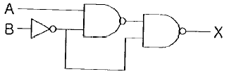
- X = AB
- X = A + B
- X = A'B + AB'
- X = AB + AB'
(정답률: 알수없음)
76. 컴퓨터의 성능을 비교할때 사용되는 것이 아닌 것은?
- MIPS
- ACCESS TIME
- WORD SIZE
- BPI
(정답률: 알수없음)
77. 채널(channel)에 대한 설명으로 옳은 것은?
- 중앙처리장치의 지시를 받아 독립적으로 입출력 장치를 제어한다.
- 주기억장소를 각 프로세서에게 할당한다.
- 주기억장치와 중앙처리장치 사이에 위치한다.
- 목적프로그램을 주기억장치에 적재한다.
(정답률: 알수없음)
78. 다음 중 정보통신부장관이 단말장치의 기술기준로 정할 수 있는 내용이 아닌 것은?
- 전기통신망 운용자의 위해방지에 관한 사항
- 전기통신요금 산정 기준에 관한 사항
- 비상 역무를 위한 전기통신망의 접속에 관한 사항
- 전송품질의 유지에 관한 사항
(정답률: 알수없음)
79. 국가기관 등의 전산망 감리는 어디에서 수행하는가?
- 한국정보문화센터
- 초고속정보통신기획단
- 한국전산원
- 한국정보통신기술협회
(정답률: 알수없음)
80. 전기통신기자재의 형식승인을 심의하는 형식승인 심의회의 위원장은 누구인가?
- 정보통신부장관
- 과학기술부장관
- 전파연구소장
- 한국통신품질보증단장
(정답률: 알수없음)
트랜지스터 CE(공통 이미터)증폭기에서 입력신호는 베이스-에미터 전압(VBE)과 베이스 전류(IB)로 주어지며, 출력신호는 콜렉터-에미터 전압(VCE)과 콜렉터 전류(IC)로 나타난다. 따라서 입력전압은 VBE, 입력전류는 IB, 출력전압은 VCE, 출력전류는 IC로 표시해야 한다.